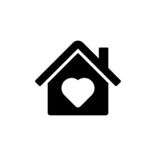
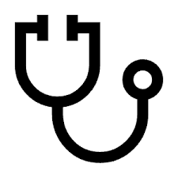
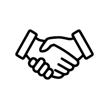

SERVICES
At ILAKKU, every activity is designed to enrich students’ lives, build confidence, and inspire leadership.We focus on education, skills, health,and awareness,ensuring that first-generation learners not only excel in their studies but also grow into changemakers in their families and communities.

Our Students Education and Career Program
At ILAKKU, we believe that education is the first step to empowerment. Many of our students are first-generation learners, facing challenges like lack of resources, limited family support, or financial struggles. To bridge this gap, we offer academic mentoring, English and computer classes, grammar lessons, and study skill workshops that strengthen their learning foundation.
Beyond academics, we prepare students for the future workplace. Career group meetings, discussions on certificate courses, project-based learning, and career-awareness sessions introduce them to diverse paths like paramedical studies, IT, teaching, and entrepreneurship. Students also engage in resume building, communication practice, and leadership exercises, which boost their confidence to face interviews and professional settings.
Here are the Key focus areas of our work:



.png)